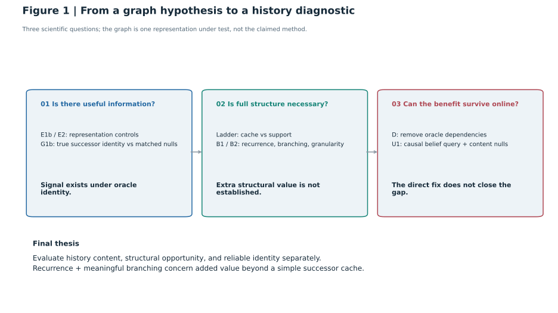
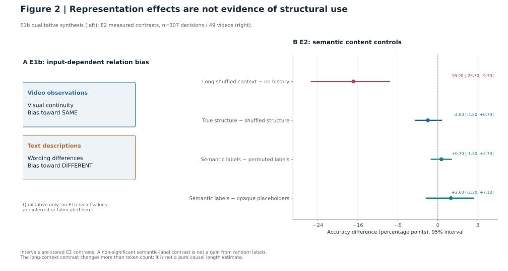
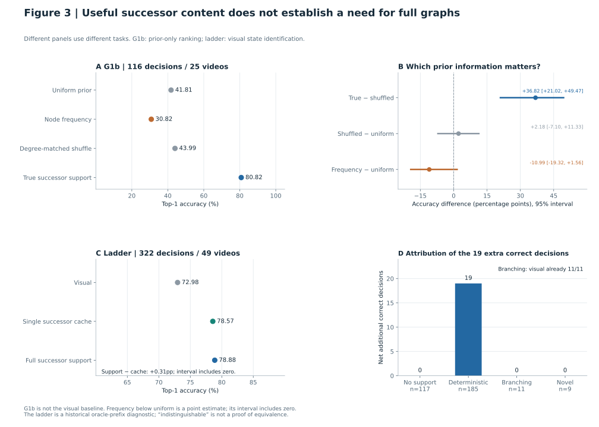
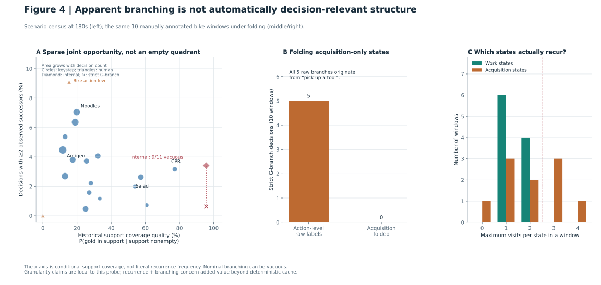
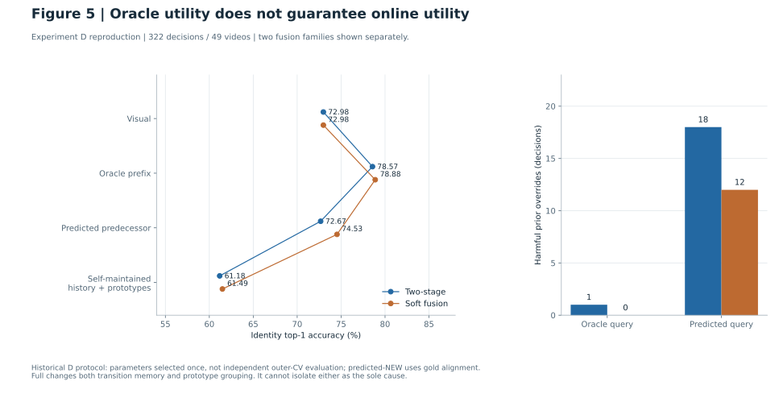
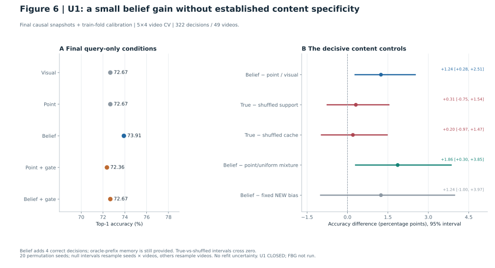
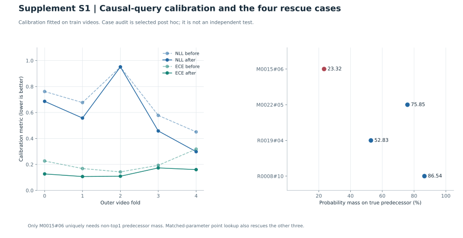
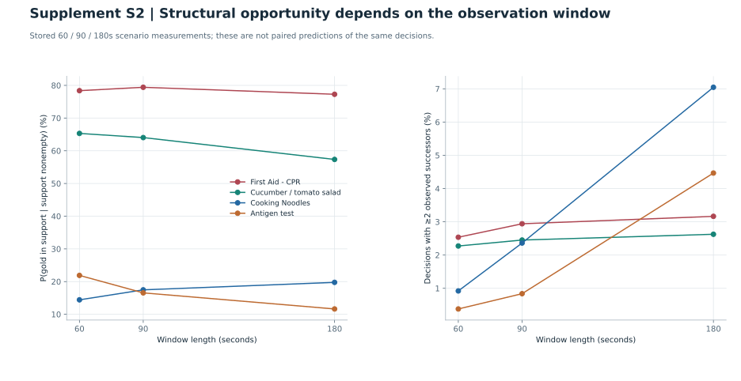

fig01_study_logic · Study logic

概念图，不是测量图。三层分别回答信息、表示复杂度和在线可用性；不将 U1 画成成功方法。
6 张正文图 + 2 张附录图。全部数值来自保存产物；未运行新实验。U1 已关闭。

概念图，不是测量图。三层分别回答信息、表示复杂度和在线可用性；不将 U1 画成成功方法。

左侧为 E1b 文档中的偏置方向示意，当前 checkout 缺成对评分产物，故不绘数值。右侧直接取 E2 10-12 重算的四个差值与区间；0.7/2.6pp 是真实语义相对置换/占位符差值，均不显著。

上排将 G1b 的真实内容与度匹配置换区分；下排展示完整 support 相对单条 cache 未建立额外收益，19题净增益全在确定性 regime。不同任务分母分别标出，不将均匀先验41.8%当视觉基线。

左图保留19个点与样本大小差异，内部名义多后继与严格G-branch用连接标记区分；不画“联合区间为空”的误导图。中/右为同10个人工窗口的折叠与访问分布，不把30个keystep窗口当成配对对照。

分别绘两阶段与soft融合，不混算；右侧将oracle与预测查询的harmful override并列。Full同时改变转移与原型，不作单因素因果归因。准确率是点估计，未伪造绝对准确率区间。

主表只用最终因果+校准版本；右图必须和B>V一起出现。真实support 73.91%、打乱均值73.60%，CI跨零；不能解释为uncertainty-aware memory已成功。bootstrap类型标清，停止状态与未运行FBG写在图内。

左为因果query校准的各fold NLL/ECE；右为4题正确前驱质量，仅第一题需要非top1查询。非因果早期98.4%接口不混入最终表。

从保存的三个窗口敏感性JSON取数，展示覆盖质量与多后继机会对窗口的不同依赖。横轴改变评测单位，不把点连线当相同决策的配对因果干预。